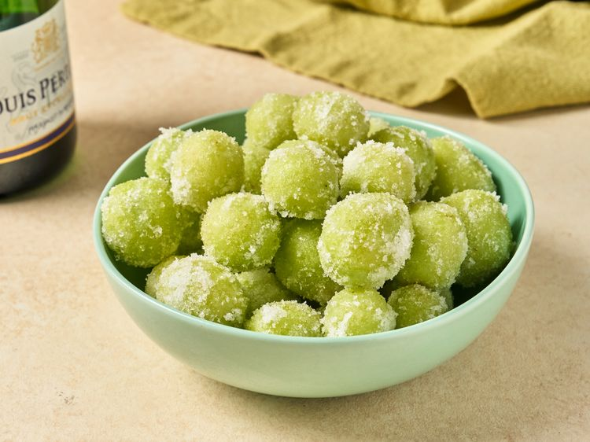

Candy Grapes
Main

-
Prep Time
5 mins
-
Freeze Time
2 hrs
-
Refrigerate Time
12 hrs
-
Total Time
14 hrs
-
Servings
5 to 10
Description
For these candied champagne grapes, marinate them overnight in sparklig wine, toss in sugar and freeze. They're pretty and festive droped into a glass of Champagne or just served on their own.
Ingredients
- 1 bag seedless green grapes
- 1 cup white sugar
- 1 bottle cheapo prosecco
Directions
-
Step 1
Pour champagne over grapes in a large bowl until covered, cover with plastic wrap and refrigerate for 12 hours.
-
Step 2
Drain grapes and return to the bowl. Toss in sugar then spread out onto a baking sheet. Freeze at least 2 hours before serving.
-
Step 3
Serve immediately or add a few to a glass of champagne for the holidays.
Nutrification Facts
-
149
Calories
-
9g
Fat
-
17g
Carbs
-
2g
Protein